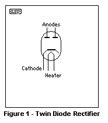
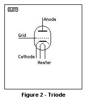
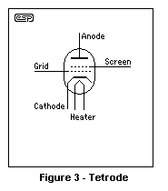
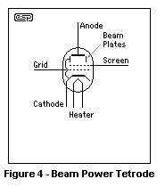
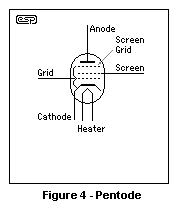

|
|
| Elliott Sound Products | Valves (Vacuum Tubes) - A Primer |
 Valves Index
Main Index
Valves Index
Main Index
Valves (vacuum tubes) ... much as I've tried to ignore them in the (futile) hope that they'd go away, they haven't, and probably won't. I don't dislike valves - and I'll use the term "valve" as opposed to "tube" because that's what I have always called them. I was trained in electronics at a time when valves were still very much current technology, and although transistors were around (indeed, so were some early ICs), the courses I attended had not caught up with the times.
My reluctance to publish anything to do with valves is based on the simple fact that many of those available today are not to the quality standards that existed when they were being manufactured in the UK, US and Australia (to name a few). Some of those from Russia are very good, but the quality is variable, and too many cowboys seem to be involved in the wholesale and retail businesses that supply valves to the end users. Most of the Chinese valves are somewhere between dubious and useless, however there are undoubtedly exceptions. Even getting decent valve sockets can be an issue, to the extent that very well known valve guitar amp makers have been caught, installing sockets that lose their grip on the pins after only a few insertions.
Having spoken at some length with a couple of friends and done a bit of preliminary research, it seems that there is something of a dearth of good information available on the Net - there is any amount of info, but much of it is apocryphal, misleading or just plain wrong. There is also a significant body of work that is none of these things, but it can be very difficult for readers to pick the difference between the good, bad and indifferent. There is also a fair amount of "magic" thinking - attributing mystical properties to valves, or implying that valve amplifiers achieve things that transistorised amps simply cannot. For the most part, this is untrue - there are certainly differences, but they are not as great as many people seem to think.
Having said that, there are some things that valves do naturally that are very difficult with transistor amps. In any serious analysis though, it becomes obvious that most of these characteristics are not the things that make or break the sound. Of course, guitar amps are a somewhat different animal altogether, in that they are operated outside the linear region for much of the time. Where the linear regions of almost any amplifier are surprisingly similar, once pushed into deliberate distortion, things change rapidly.
This is the first of what will eventually become a series of articles about valves. There is a great deal to discuss, and even more to be learned. Valves are interesting, not just from the historical perspective, but because they have attained almost cult status despite the fact that they are essentially a dead technology.
This article is not a history lesson - I will not be covering the many inventions and inventors who gave us the valve as we know it today. There is a vast amount of information on the Net for those who really want to know the historical progress of valves, and I will (at most) give a very brief account of developments as they relate to the function of each valve type.
The first valve invented was a diode (John Fleming, 1904), and since a diode passes current in one direction but not the other, the term "valve" was applied - the diode acted like a one-way valve. The name has stuck for Australian, British and New Zealand residents, and is in sufficient usage that it's accepted (albeit reluctantly) in the US. There, the term "vacuum tube" (or more commonly, just "tube") is preferred.
Regardless of what we call it, a diode valve has two elements or electrodes ("di", meaning two, plus the end of the word electrode). These are the anode (A) and cathode (K). The cathode is heated, and tends to "boil" off electrons. When the anode (also commonly known as the plate) is made positive with respect to the cathode, the electrons travel across the vacuum and complete the electrical circuit. Should the anode become negative with respect to the cathode, no current flows. The negative anode charge repels electrons, and any current that does exist is extremely small. After some time in the 1920s, most valves used increasingly specialised coatings on the cathode material itself, in order to improve the emission characteristics.
The symbol for a (dual) diode is shown to the left. The version shown here uses an indirectly heated cathode, but many diodes use a directly heated cathode - that is to say that the heater and cathode are one - they are not separate. It is traditional to refer to such a cathode as a "filament", and it is generally believed that this term came from the fact that the earliest diode was a filament (incandescent) lamp, with an extra electrode (the "plate") added. Why exactly anyone would add an electrode to a lamp is a mystery, but it was the beginning of electronics as we know it today.
Other variants followed, and the most common version used today has two plates (or anodes), allowing a full-wave rectifier to be made with a single "tube". Like the one pictured, these may use either an indirectly or directly heated cathode. A major disadvantage of using a filament (directly heated cathode) is that a separate winding is needed on the power transformer to power the filament, because the cathode is the positive output terminal.
Indirectly heated cathodes have their own problems though, especially if the same heater winding (on the power transformer) is used for the rectifier and input valves. Hum can easily be injected into the heater circuit, which then can cause serious hum problems due to heater-cathode leakage in the input circuits. The insulation quality of indirectly heated diode valves is often not sufficient to withstand the high voltages used, so it may be necessary to use a separate transformer winding anyway.
There is a great deal of nostalgia about valve rectifiers, but they are grossly inefficient compared to semiconductor diodes. They do have one advantage though, and that's the slow heating time. This allows other valves in the circuit to get to operating temperature before the full HT is applied. Filter capacitors are less stressed, because there is no sudden current surge, and the voltage never rises above their normal operating voltage. If silicon diodes are used, series resistors will help mimic the valve rectifier's rather soggy regulation and limit the switch-on surge current.
In order to prevent the HT from being applied before the valves warm up sufficiently, the input AC can be supplied via a relay with a time delay circuit. This is a far better option IMO, but not one that valve purists will usually adopt. There are a great many well known valve guitar amps that use silicon diodes for rectifiers, and this is one compromise that is often accepted.
Adding a third element to a valve (Lee De Forest, 1906) was the breakthrough that finally allowed us to amplify a signal. Prior to the triode (tri - three), there was nothing in the new field of electronics that provided amplification. Adding the grid allowed a small voltage to control the current passing between the cathode and anode. The grid is most commonly a fine wire spiral, wound so that it is close to the cathode. It is insulated from other elements within the valve.
The variation in the plate current can easily be applied across a resistor to convert it back to a voltage, but in the early days the nice stable resistors that we take for granted today were not common, so a transformer was often used. These have the advantage of being able to convert impedances as is still done with output stages, but were (and still are) expensive
Now, we use a resistor for all preamp stages, and a transformer only for the power amplifier stage. The resistor "current to voltage converter" has been the method of choice (for audio at least) since the 1920s or thereabouts. Transformers are expensive and have a limited bandwidth - two issues that are neatly solved by using a resistor. Using a resistor is very inefficient though, but this is not generally a problem for low frequency preamp stages.
Valves can be though of as voltage to current converters. The voltage on the grid controls the current through the valve (not the voltage on the plate as you may have thought). The current change is converted into a voltage change by the plate resistor. If the resistor is (say) 47k and the current changes by 100uA, there is a voltage change of 4.7V across the resistor (Ohm's law ... V = R * I). Although the resistor load is very inefficient, it is convenient - a transformer ensures that almost all of the current variation is converted into a voltage with fewer losses.
Towards the end of the valve era, many valves were given a gain figure in mA/ V, where the voltage (V) was applied to the grid, and the current (mA) was the change of plate current for a 1V change of grid current. A more common gain figure was transconductance (Gm), which is in µmhos (mho is ohm spelled backwards). The use of the mho is now pretty much gone in all fields except valves - the shiny new unit is the Siemens (S), but the measurements themselves are identical. A valve with a Gm of 1,000 µmho has a Gm of 1mS.
Note: 1 Siemens (1S) is equal to 1 Ampere per Volt, so 1mS is the same as 1,000µmhos, which is 1mA/ Volt.
If a valve has a transconductance of 1,100 µmhos, this is exactly equivalent to 1.1 milli mhos, 1.1 mS (milli-Siemens) or 1.1mA/ V. These terms are therefore fully interchangeable. The transconductance for triodes is generally within the range of about 0.8 to 8mS. This makes it easy to convert from one to another.
Regardless of the names given to the conversion factor measurement of a valve, the end result is identical - a change of grid voltage causes a change of plate current, and this is converted back to a voltage using a resistor or transformer. Now that we have some control over the behaviour of a valve, a new measurement sneaks in - plate resistance. This isn't a real resistance - it's simply a convenient way to express the dynamic relationship between the change of plate voltage to plate current (with the grid held at a constant voltage).
Plate resistance varies with plate voltage (as does transconductance), so a measurement taken at a plate voltage of 200V will be different from that taken when the plate is at 100V. During the design phase of any valve amplifier section, it's important to know (or at least estimate) the plate resistance and transconductance for the voltage that exists on the plate. Since a valve is (or attempts to be) a voltage controlled current source, one would like the plate impedance to be infinite, but a triode has too little gain to even remotely approach that. The plate resistance is effectively in parallel with the load (the combination of plate resistor and any circuitry following the stage), so a low plate resistance reduces gain to well below that which we might expect.
Another parameter you often see is so-called "amplification factor" (abbreviated to µ ... pronounced mu). The amplification factor of a valve is the theoretical maximum gain that can be obtained. It is based on the variation of anode voltage to grid voltage, but is measured with the anode current held constant. The only way a triode can achieve its quoted gain (based on µ) is if the plate load resistance (as well as any following stage) is infinite. A valve with the grid very close to the cathode has a high amplification factor. The typical values for µ fall between 10 and 100 for most triodes. µ is largely a physical parameter, so it is (theoretically) not affected as the valve ages. While this is a simplistic approach, in practice it is quite close to reality although a small change will occur as a valve ages. In many cases, even though a valve may have poor emission, be noisy and/or microphonic, it may still provide (very close to) the gain expected. What it perhaps can't do is provide the normal output voltage swing without serious distortion, but at low levels the valve appears to function normally.
µ = ΔVa / ΔVg Where Δ means incremental change, Va is anode voltage and Vg is grid voltage.
Note that plate impedance, transconductance and amplification factor are small signal parameters, and only work when the variation in plate voltage is very small - typically less than 10% of the steady state voltage.
Since this is just a primer, the actual design of valve stages will be left for another article. However, it is very important to understand the parameters and their interactions with the real world, because these are the things that influence the performance of the final circuit. The descriptions given here are not the last word by any stretch of the imagination, so the next installment will cover the parameters and their effect on the final design in more detail.
The low gain and limited bandwidth of early triodes led to a great deal of experimentation in the early 20th century. One of the most important areas in the early years was radio, or wireless as it was known then (the term is now back in vogue for networking). Communications were limited to wire transmissions before the valve, which was very restricting. The problem with a triode is that it can have considerable capacitance between the plate and control grid, and combined with high impedance circuits this allowed some of the high frequency signal on the plate to be coupled back to the grid. This is feedback, and it reduces the gain at high frequencies due to the stray capacitance. Not generally a problem for audio, but a major issue for radio frequency use. 
The added screen grid is so-called because it "screens" the control grid from the plate, reducing the capacitance and increasing bandwidth. It also dramatically increases the gain, because the screen acts as an accelerator to the electrons that have been liberated by the hot cathode. This greatly increased gain comes at a significant cost though, due to a process called secondary emission. The electrons are accelerated to such a degree that when they hit the plate, they have sufficient energy to dislodge electrons from the plate's surface. Some of this secondary emission is simply attracted back to the anode from whence it came, but some is captured by the screen grid. This increases the dissipation in the screen, causes distortion, and often leads to a negative resistance characteristic at some point in the operating range. This is known as the "tetrode kink". Some tetrodes (notably the KT66 and KT88) were described as "kinkless tetrodes". While this implies that there is no kink, these valves do indeed have a kink in their plate characteristics, but it is (supposedly) less severe than "ordinary" beam tetrodes. I suspect that the term was primarily used as a marketing tool.
The greatest benefits weren't realised for some time after the tetrode (tetra - four) was introduced, but the screen grid proved that valves could have very high gain and, more importantly for radio applications, a wider bandwidth than previously thought. The gain of these valves is far less dependent on the plate voltage than is the case with triodes. As the plate voltage varied with signal, there is very little gain change - provided the screen grid is held at a constant voltage. This also means that the effective plate resistance is much higher. Plate resistance is effectively in parallel with the theoretical "voltage controlled current source" model for a valve, and the higher the value the greater the available gain - at least with a resistive load.
Selection of the screen grid operating voltage is important. If it's too high, there will be excessive current flowing in the screen grid, raising its temperature - possibly to destructive levels. Except for a few specialised topologies, the current in the screen is completely wasted, in that it doesn't contribute to the plate current to produce useful output. Be that as it may, the tetrode was a giant leap in performance, having much higher gain and better high frequency response than could previously be obtained from these new but very expensive vacuum tubes. 
An interesting variation of the tetrode that became (and still is) very popular is the beam power tetrode. These were initially developed to bypass the Philips patent for the pentode (next section), in around 1933. A pair of beam forming plates are connected to the cathode, and these force the electron beam to follow a specific path, bypassing the grid support wires in particular. They also help to suppress secondary emission from the plate. The "beams" that give the valve its name are formed by careful alignment of the control and screen grids, which focuses the electron beams just before the plate surface. This forms a "virtual cathode" (aka space charge), and since it has a relatively strong negative polarity due to the focussed electron beams, it acts as a convenient means to suppress secondary emission.
Virtually all of the tetrodes today are beam types. Beam forming plates are used, and the control and screen grids are aligned to form the beams. It is common to direct the electron beam(s) onto that part of the anode mechanical structure where there is the most metal (typically at the seam where the two halves of the plate are joined). This provides improved heat dissipation because of the increased surface area, raising the plate dissipation and the power the valve can handle.
The pentode (penta - five) was developed in 1930, by Philips in the Netherlands (formerly Holland). Because of the problems of the standard tetrode (primarily secondary emission), a third grid was added, and connected to the cathode.
This suppressor grid did what its name suggests - it suppressed the secondary emission from the plate, so repels electrons. High velocity electrons pass straight through the relatively open suppressor grid, but the negative potential is sufficient to prevent secondary emission electrons from migrating back to the screen grid.
The development of the pentode was a very significant improvement over anything that came before. Having much higher gain than a triode because of the screen grid, along with greatly reduced secondary emission thanks to the suppressor, it became the valve of choice for high gain applications. Pentodes were also made as power output valves, and (along with power beam tetrodes) are the most commonly used output valves in guitar amplifiers.
Like the tetrode, the screen grid in a pentode both accelerates the electron beam and shields (screens) the control grid from the anode. This provides the high gain and extended high frequency response needed for radio, radar and (later) television receivers, and in the larger versions provided more power than was ever available before. Because of the high gain, it became possible to make amplifiers that had a significant current swing in the plate circuit, but with grid drive voltages that were achievable with relatively simple circuits. Each and every step in the development of valves has led to applications that were never possible before.
Even today, there are some applications that rely on the use of valve technology. The magnetron (as used for radar, and of course the microwave oven) is a valve, and there is no solid state equivalent. Very large radio frequency transmitters generally use valves, because they are easily scaled and are comparatively easy to keep cool enough to prevent self destruction.
During the heyday of valves, some amazing variants were developed. Pentagrid valves that acted as an oscillator and RF mixer stage were common in radios, and reduced the number of individual envelopes needed to produce a receiver with acceptable gain and selectivity to be useful to the public. Many valves contain several different elements - triode-pentode valves could be thought of as a very early attempt at an integrated circuit, having two independent structures within the same glass "bottle". These usually shared the heater connection, but all other electrodes were available as normal. Another common function was to combine a triode (or pentode) with a dual diode, enabling the one valve to be an RF detector and first audio amplifier.
Twin triodes are very common, and are one of the most popular preamplifier valves in use today. The ubiquitous 12AX7 is quite possibly one of the most successful valve designs ever, being the mainstay of almost every guitar amplifier ever made, as well as being popular for hi-fi amps, instrumentation and other industrial applications.
As noted above, the magnetron is a valve, as is another ultra high frequency amplifier, the travelling wave tube. The TWT is a highly specialised valve, specifically for high output power and very high gain. Operating frequency extends to ~50GHz. There are literally hundreds of different types, and up until very recently, most readers would have been reading this article with the help of a valve - the cathode ray tube (CRT). The invention of the CRT allowed radar systems to show the position of detected planes, ships, etc., and also was instrumental in giving us television. Hmmm. Perhaps not such a good idea after all  .
.
There are a great many other valve types of course, but it is outside the scope of this article to go into any detail. The majority of readers are interested in audio applications, either for guitar (including bass) or hi-fi applications. Even with the scope narrowed to those applications alone, there are still many, many valve types that are (or appear to be) suitable. Future articles will examine the most popular of these, but I do have to point out that if you expect information on truly ancient technology (single-ended triode amplifiers using 300B valves for example), then I'm afraid that you'll have to look elsewhere.
To be perfectly honest, I am of the opinion that 1930s (or earlier) technology belongs to the era where it was popular. Huge advances were made in the late 40s through to the early 60s, with the important parameters (such as distortion) reduced to far lower values than was possible before, along with sensible and usable output power and improved efficiency. The (then) new valve types and major increases in our understanding of output transformers made big differences to available bandwidth. The (almost) complete elimination of single-ended triode power amplifiers relatively early was a direct result of improved topologies, coupled with very good output transformer designs that were also far more efficient by virtue of push-pull power amplifier stages.
While I am somewhat reconciled to the fact that valves won't go away, this doesn't mean that all amplifiers using valves were "good". The truth be known, many were awful, and engineers of the day were delighted at the prospect of transistors - greater reliability, more power, and improved efficiency. When combined with lower distortion and generally improved technical performance (which is important, regardless of the opinions of some of those pushing the esoteric SET agenda), there is no comparison. It also follows that many of the early transistor amps were bloody awful, and to an extent the stigma has remained - over 50 years later, and some people who have never heard a bad transistor amp still think they're "bad".
All of the major manufacturers of quality valve hi-fi equipment used push-pull amplifiers, generally rated at between 20 and 50W, since it was determined that this was a very satisfactory power for domestic sound reproduction. Many of the designs used were very innovative, with highly specialised output transformers being common. Performance of valve equipment reached it peak just prior to the introduction of transistor amplifiers. This was to be expected, since the advantages to both manufacturer and end user alike were so great that all major makers of quality equipment switched almost overnight, thus ending further valve development for the most part.
It's interesting to observe that these manufacturers (such as Leak, Quad, McIntosh, Fisher, etc.) never used single-ended triode output stages. All output stages were push-pull because of the huge improvement in all of the parameters that were deemed to be important - frequency response, distortion (harmonic and intermodulation), hum and noise, output power, etc. These makers did not use push-pull designs to reduce cost or weight - many of the best amps at this time were "cost-no-object", and could only be afforded by a small few consumers.
Single-ended designs were restricted to mantel radios, portable record players and other (comparatively cheap) consumer items, and these almost exclusively used small output pentodes, and were typically rated at about 2-5W output, with a restricted frequency response that matched the small loudspeakers used in these applications. Even single-ended pentode guitar amps were common - mainly as practice amps. Most were dreadful.
Having said this, it must be admitted that the SET (single ended triode) amplifier has a place in the world. It makes a very convenient way to prevent doors from closing uninvited due to wind gusts, small children and pets. Needless to say, for continued reliable service in this rôle (and for the safety of others), it is best left disconnected from any power or signal source. An alternative valid use is to allow small boats to remain tethered to the ocean floor to prevent drifting about and causing themselves a mischief.
Preamps are much simpler, with the only issue being to get the proper heater voltage and a high tension supply that will give you the output swing you need. The heater voltage is far more critical than some people imagine, and if too low, the result can be cathode poisoning - a condition where the cathode materials are contaminated by trace amounts of gas. Should the heater be run at too high a voltage, its usable life expectancy is reduced, perhaps considerably. Where a valve calls for a 6.3V heater supply, this should be as close as possible to 6.3V AC (allowing for normal mains variations), or 6.3V DC, which can be maintained very accurately by using a regulator.
In many respects, there's a lot to be said for using valves and transistors together, in a hybrid design. While not a purist approach, hybrids can give the best of both worlds, using valves as voltage amplifying devices, and transistors as current amplifiers (for example). Transistors with the necessary voltage ratings are now readily available, and the hybrid approach also permits the use of PNP transistors (or P-Channel MOSFETs), something for which there is no equivalent with valves. Valves come in one "flavour" - the equivalent of an N-Channel FET, and no complement exists in the world of the valve.
Because this is only a primer, there is a vast amount of information that's not been included. The idea here is to introduce the basics, and to familiarise the reader with some of the concepts of valves. It's important to understand that a signal amplified by a valve is no different from the same signal amplified by a transistor or an opamp, provided signal levels are kept low enough to ensure that each device operates in its most linear region. In one respect, a valve preamplifier is potentially more linear than a transistor preamp without feedback, because the output voltage swings over such a small range compared to the supply voltage. If you need 2V RMS of signal, this may be only 2% of the valve's normal plate voltage, but the same swing from a basic transistor circuit could easily exceed 20% of the nominal collector voltage. With small variations, the device can easily remain within its linear region, but as the output level becomes a larger percentage of the available supply voltage, linearity suffers. This increases distortion (both simple harmonic and intermodulation), and can easily become audible.
One (of many) claims found is that valves are linear, while transistors are not. This is flawed thinking - valves are not linear. If they were, then valve amps would not have distortion at all. As noted above, valves do operate at high voltages by comparison, but a transistor operated with the same voltage and current, and having the same gain and output level, will beat a valve hands down for distortion. Does this mean that transistors are more linear than valves? No. It simply means that such comparisons need to be treated with some suspicion because the devices are very different from each other. In order to get a transistor stage to have the low gain of a valve, it is necessary to apply local feedback (using a relatively high value emitter resistor) and this changes the comparison completely.
Remember - there is no magic involved with valves. They don't do anything that can't be done with a carefully designed transistor stage, and for sheer performance, valves don't even come close to opamps or well designed transistor circuits. There are certainly some good reasons to experiment (especially with preamps), as the cost is relatively low and the experimenter will learn a great deal. Whether this knowledge is ultimately useful is another matter altogether.
It is inevitable that I too will make errors during the compilation of information, and these are regretted in advance. If any such errors are found, please let me know.
Valves Index
Main Index